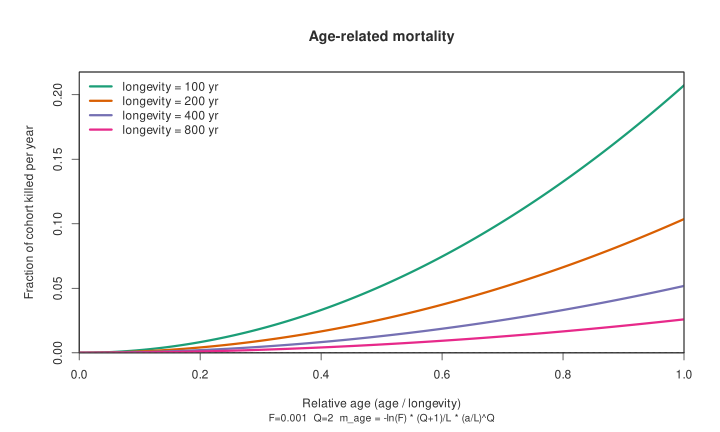
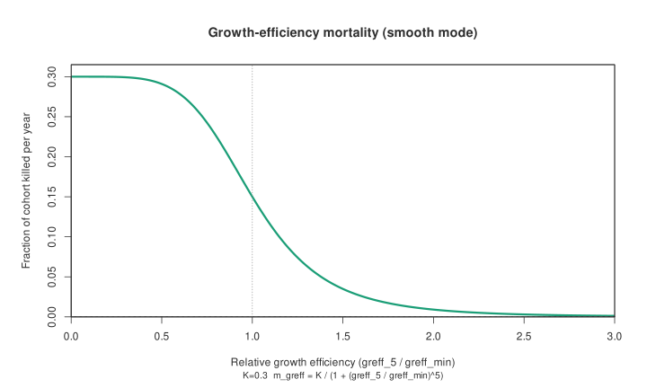
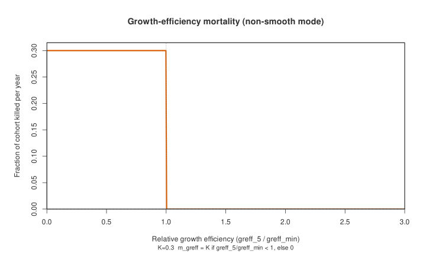
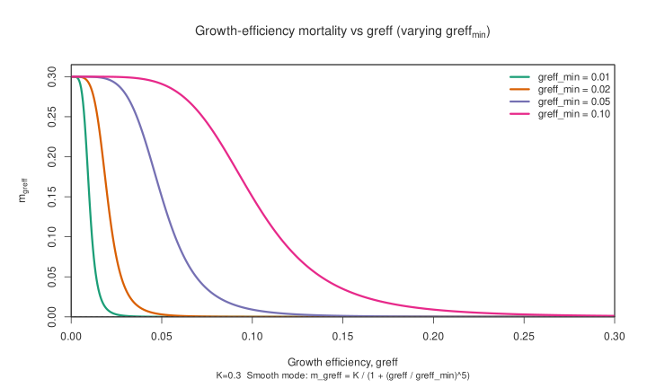
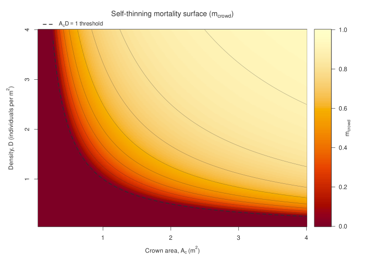
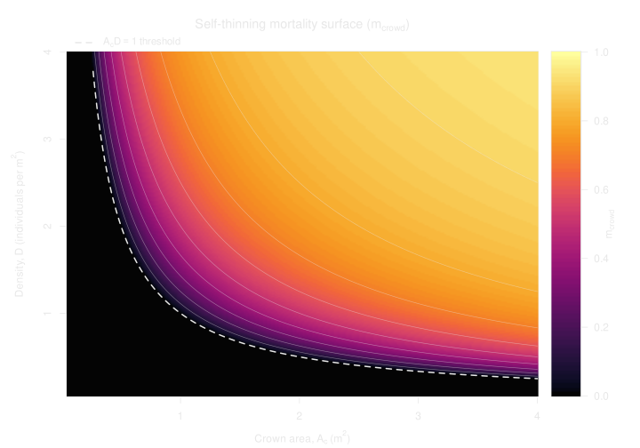

Mortality
This page documents mortality in DAVE for cohort and individual
vegetation modes (the *_guess() demography pathway, i.e. non-population mode).
What “Mortality” Means Here
In this context, mortality means one of two things:
- complete death of an individual/cohort (object removed), or
- partial loss of cohort density/biomass (cohort remains, but with reduced mass or density)
Mortality is applied by multiple processes that happen at different points in the yearly workflow.
Annual Workflow
At year end, the main order is:
- disturbance check (
disturbance()invegetation_dynamics()) - demographic mortality (
mortality_guess()) - establishment (
establishment_guess())
Fire mortality is handled inside mortality logic for GLOBFIRM, but in a separate driver for BLAZE.
Mortality Processes in mortality_guess()
1) Bioclimatic limits
If a PFT's bioclimatic limits are exceeded, the whole individual/cohort is killed.
The survival filter is:
and
If either fails, that individual/cohort is completely killed.
2) Background (age-related) mortality
For trees, annual age-related mortality is:
with code defaults:
- \(F = 0.001\)
- \(Q = 2\)
- \(L =\) PFT longevity parameter (years)
- \(a =\) cohort age (years)
The figure below shows \(m_{\mathrm{age}}\) against relative age \(a/L\) for several longevity values, generated from the same equation above.


Figure source script: analysis/mortality_plots.r.
3) Growth-efficiency mortality
Growth efficiency is computed as:
A 5-year running mean is used: \(\overline{m_{\mathrm{greff}}}_{5}\)
If smooth mode is enabled (ifsmoothgreffmort = 1):
where:
- \(K = 0.3\) (maximum fraction of cohort that can be killed per year due to growth-efficiency mortality)
- \(m_{\mathrm{greff},\min}\) is the PFT growth-efficiency mortality threshold
parameter
greff_min.
If smooth mode is disabled, then:
The figures below show the growth-efficiency mortality response as a function of relative growth efficiency \(\overline{greff}_5 / greff_{\min}\).
Smooth mode (ifsmoothgreffmort = 1):


Non-smooth mode (ifsmoothgreffmort = 0):


Sensitivity to greff_min (smooth mode, plotting \(m_{\mathrm{greff}}\) vs
\(greff\)):


Figure source script: analysis/mortality_plots.r.
In cohort mode, an extra self-thinning floor is applied when \(A_c \times D > 1\):
Where:
- \(A_c\) is cohort crown area (m\(^2\))
- \(D\) is cohort density (individuals per m\(^2\))
The growth-efficiency and crowding mortality are combined as:
The figure below visualises the effective crowding mortality used in code as a function of crown area (\(A_c\)) and density (\(D\)):


4) Combined non-fire mortality
Age and growth-efficiency mortality are combined as:
Then either:
- stochastic mortality (if enabled), or
- deterministic density/biomass reduction,
is applied.
5) Fire mortality (GLOBFIRM branch)
If a fire occurs in the patch:
Where fireresist is the fire resistance PFT parameter.
Then stochastic or deterministic survival is applied (depending on ifstochmort
and management settings).
Disturbance Mortality (patch-destroying)
Before mortality_guess(), patch disturbance may occur in
vegetation_dynamics().
If triggered, all individuals/cohorts in the patch are killed and the patch age resets. Mortality/establishment are skipped for that patch in that year.
Carbon-Starvation Mortality in Growth
In addition to mortality_guess(), growth code can kill individuals when
negative NPP cannot be fulfilled by storage pools.
These are implemented in growth pathways (annual and daily DAVE allocation), not
in mortality_guess() itself.
Other Causes of Mortality
Depending on settings, there are additional mortality pathways outside this demography function:
- BLAZE fire mortality (separate fire module)
- hydraulic-failure mortality (if DAVE hydraulics is enabled)
- management-driven removal (harvest/clear-cut related cohort removal)
These can remove individuals but are conceptually separate from demographic
mortality equations in mortality_guess(), and so are not documented here.
Key PFT Parameters
| Parameter | Role in mortality | Typical effect if increased |
|---|---|---|
longevity |
Controls age-mortality scaling | Cohort survives longer |
greff_min |
Threshold for growth-efficiency stress | Cohort is less sensitive to poor growth |
fireresist |
GLOBFIRM fire resistance trait | Lowers fire mortality (GLOBFIRM only!) |
tcmin_surv |
Survival climate lower bound | More restrictive in cold climates |
twminusc |
Minimum climate seasonality requirement | More restrictive if increased |
Key Switches
| Parameter | Role in mortality | Recommendation |
|---|---|---|
ifsmoothgreffmort |
Smooth vs step growth-efficiency mortality | 1 (enabled) |
ifstochmort |
Stochastic mortality toggle | 1 (enabled) |
FAQ
Why are my trees dying?
First, check the simulation log file: guess.log, written to the same directory as the top-level instruction file.
All mortality events should be logged in this file along with causes. Searching through this log is a quick and easy way to see which high-level process is removing cohorts (e.g. carbon starvation, age, etc).
Then inspect the relevant diagnostic outputs for detail, especially:
file_dave_indiv_mort: Annual cohort-level output, containing one value per cohort per year, with columns for the fraction of the cohort removed by age and growth-efficiency mortality, respectively.file_dave_acmass_mort: Annual PFT-level output, containing the total C mass removed by mortality for each PFT, each year.file_dave_amort_age: Annual PFT-level output, containing the mean fraction all cohorts of a PFT removed by age mortality each year.file_dave_amort_greff: Annual PFT-level output, containing the mean fraction all cohorts of a PFT removed by growth-efficiency mortality each year.file_dave_indiv_cpool: Daily cohort-level output of carbon pool sizes, which can be used to diagnose carbon starvation mortality. Alternatively,file_dave_cmass_storage(daily, PFT-level) can be used if you have only 1 cohort.